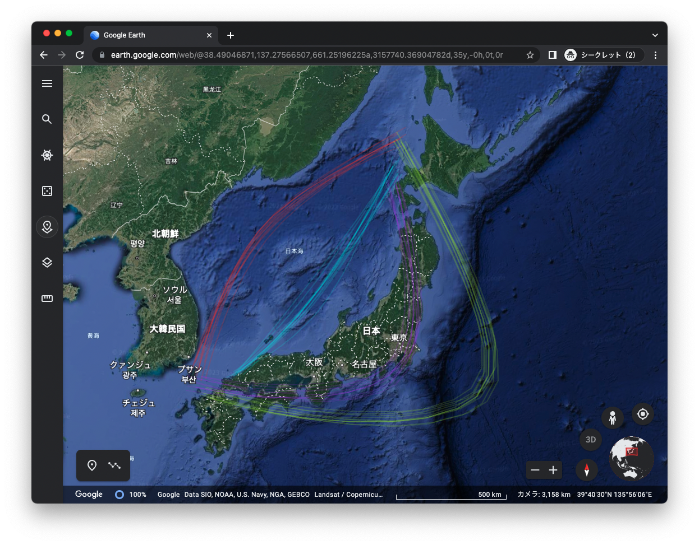
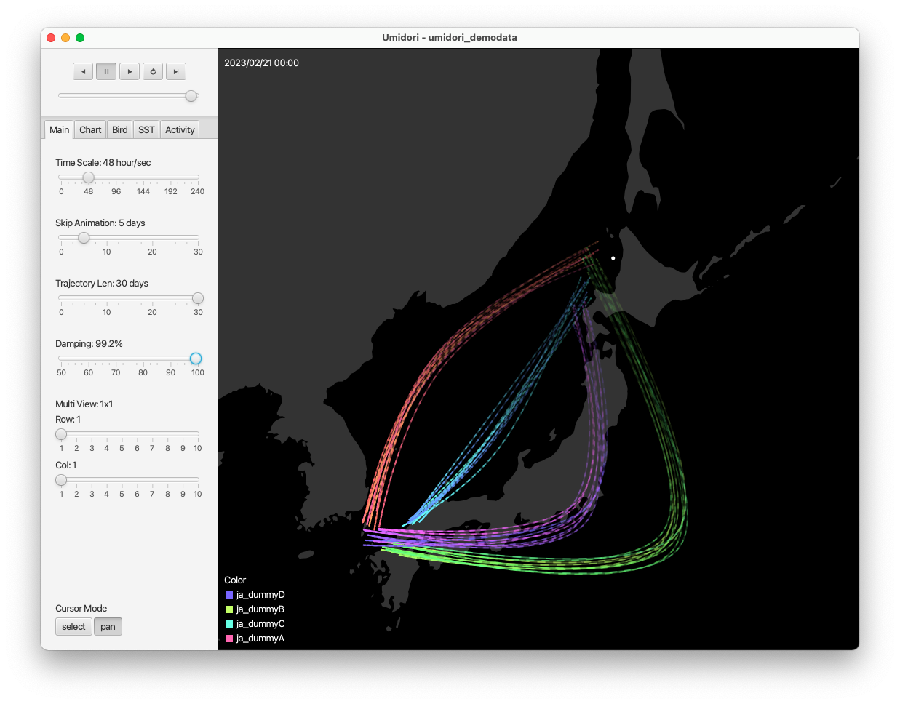
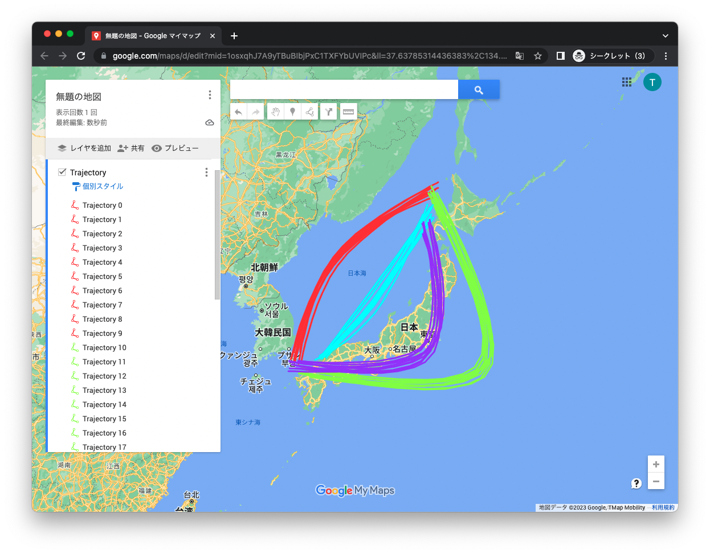
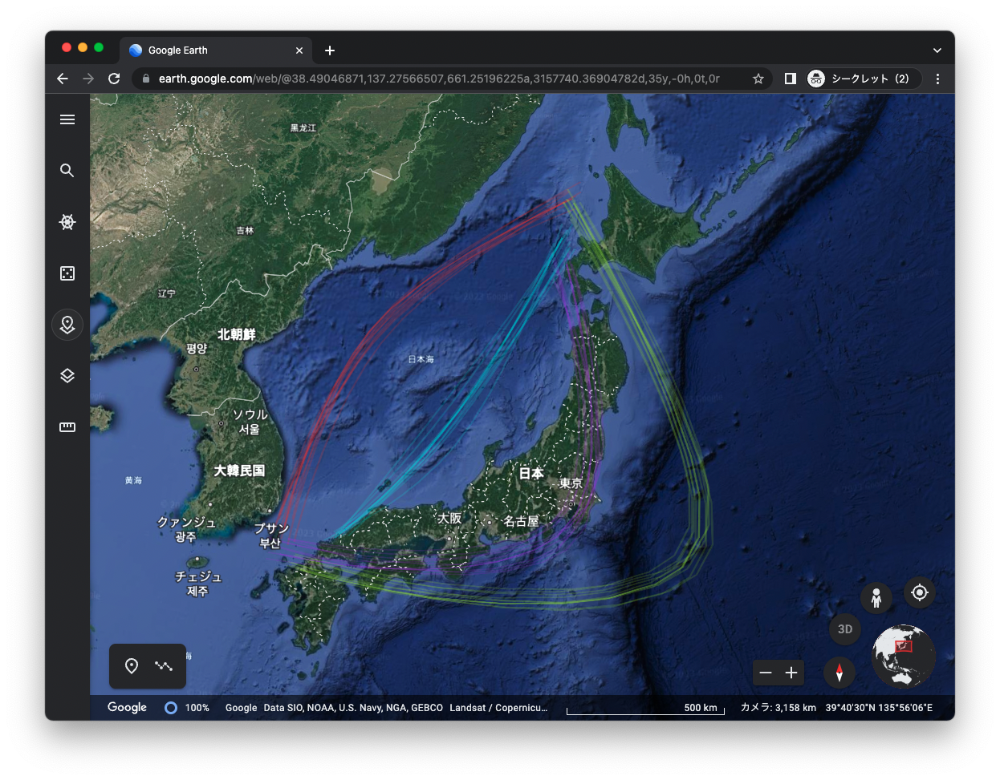
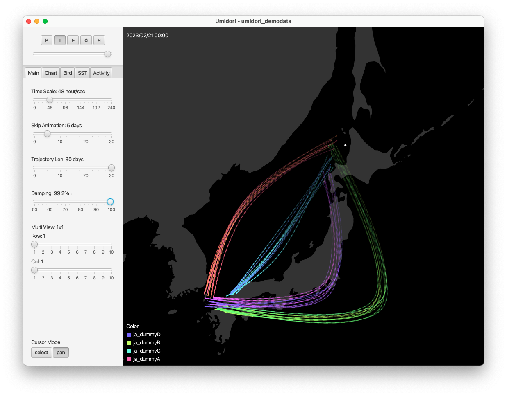
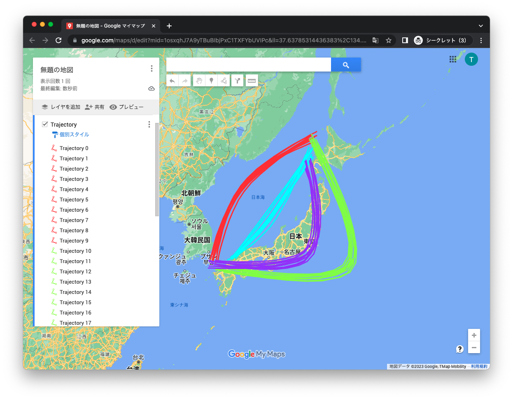

Location Data Generator
2023.02 / Web Application
 







時系列位置データを生成するためのツール
CSVをはじめKMLやGPXといったGPSログデータ形式での書き出しが可能
生成したデータはGoogle MapやGoogle Earth、作者の
Umidoriツール
などで使用することができる。
Development
TypeScript, Mapbox-gl-js